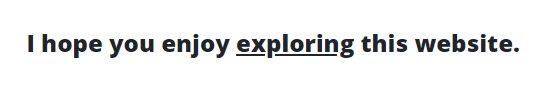

Content Experiment
For this project, I used Google Optimize to set up an A/B test, set objectives, and then examined the results of the experiment in Google Optimize and Google Analytics.
I had some trouble with my first experiment, ended it and started a new one. I ran the experiment for 2 days.
I linked 2 objectives from GA to GO.
- Click on button/link
- Path to the Kittens page
Objective 1: Click on button/link
On the original version, I added a big button with instructions to click it. This would take users to the home page:
Button on originalOn the variant, I changed the text and made one word a link to the home page:
 Link on variantObjective 2: Move from home page to Kittens page
On the home page, there are two links, "Photos" takes users to the Kittens page. This is the first button so I was expecting it would get more hits.
Optimize Reports
Summary
I didn't get a Summary Report. I'm guessing with this limited period of time and sessions that there wasn't enough data to create this report.
Improvement Overview
The red in this report indicates that the variant performed significantly worse than the original in meeting this goal.
Improvement Overview report for Objective 1Objective Overview
With this report, the performance of the original and variant versions in meeting objectives can be viewed separately or together on a chart. The shaded areas indicate how likely the goal is to be met, the solid and dashed lines indicate the median.
This report was a little difficult to understand and it will take some practice to get used to reading and interpreting these graphs.
Objective Report for original versionObjective report for Variant
The report for the Path to Kittens page goal was not as dramatic. This is the graph with combined data for the original and variant:
Objective Report for kittens destination pageGoogle Analytics
Experiments
Google Analytics and Optimize are integrated. In GA, under the Experiments link, I can compare how well the original page vs. the variant did for sending users to the kittens page:
GA experiments report for page destinationConclusion
Optimize seems like a very useful tool for testing the potential impact of revisions before implementation. It seems important to have clear goals and specific ideas about how to achieve these goals.
In the first experiment I attempted, I changed the color and size of the buttons on the home page. I didn't preview the different sizes and realized later that the buttons were overlapping when the site was viewed on smaller screens. I then realized there is a preview feature for viewing different screen sizes in Optimize which is very handy.
Overall I think my experiment, other than learning about Optimize and A/B tests, was not very useful. A big button that says "click here" in a trusted site is going to get more clicks than a word that is not an obvious link. It was not surprising that the results from Optimize were that the original was more likely to meet a goal of clicking on the button or link.